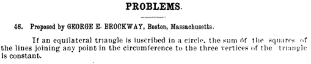
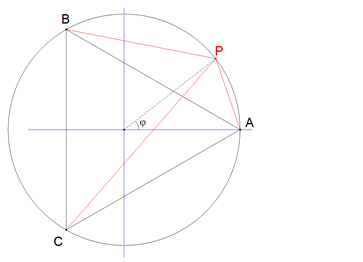
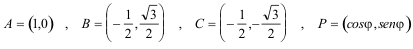
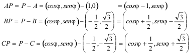
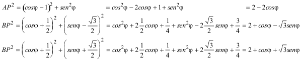
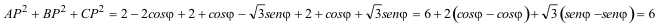

De investigación. Propuesto por Juan Bosco Romero Márquez, profesor colaborador de la Universidad de Valladolid Problema 282 2) Si un triángulo equilátero está inscrito en una circunferencia, la suma de los cuadrados de los segmentos que unen cualquier punto de la circunferencia a los tres vértices del triángulo es constante. Brockway, G. E. (1895): American Mathematical Monthly, (Volumen II, May) p. 158
 Solución de José María Pedret, Ingeniero Naval. Esplugues de Llobregat (Barcelona). (1 de diciembre de 2005) |
|
SOLUCION |
|
Para trabajar con comodidad y sin pérdida de generalidad, supondremos que el triángulo equilátero está inscrito en el círculo unidad; que el vértice A está sobre el eje de abscisas y como ABC es equilátero, el vértice B es A girado 2π/3 respecto al origen y el vértice C es A girado en sentido contrario a B.
El problema también podría tratarse en el cuerpo de los complejos, representando cada punto por su afijo y donde los giros tienen un tratamiento elegante por medio del producto en forma polar.
 figura 1 Podemos pues escribir
 Y de aquí
 Calculamos los cuadrados
 Sumando miembro a miembro nos queda
 LA SUMA DE CUADRADOS DE LAS DISTANCIAS A LOS VÉRTICES ES CONSTANTE Y ESA CONSTANTE ES IGUAL A 6 VECES EL CUADRADO DEL RADIO DE LA CIRCUNFERENCIA.
|